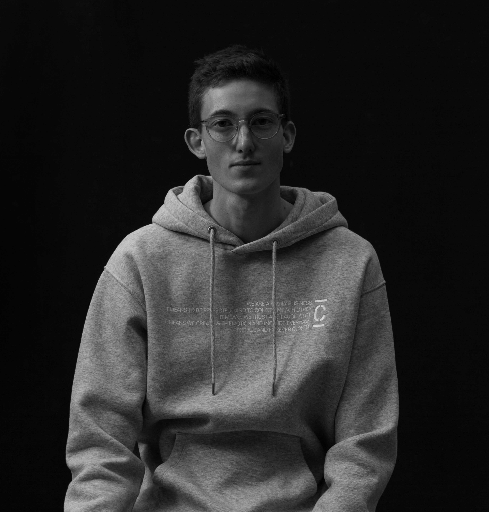

<!DOCTYPE html>
<html xmlns="http://www.w3.org/1999/xhtml" lang="en" xml:lang="en"><head>

<meta charset="utf-8">
<meta name="generator" content="quarto-1.3.433">

<meta name="viewport" content="width=device-width, initial-scale=1.0, user-scalable=yes">


<title>Dominik Eitel</title>
<style>
code{white-space: pre-wrap;}
span.smallcaps{font-variant: small-caps;}
div.columns{display: flex; gap: min(4vw, 1.5em);}
div.column{flex: auto; overflow-x: auto;}
div.hanging-indent{margin-left: 1.5em; text-indent: -1.5em;}
ul.task-list{list-style: none;}
ul.task-list li input[type="checkbox"] {
  width: 0.8em;
  margin: 0 0.8em 0.2em -1em; /* quarto-specific, see https://github.com/quarto-dev/quarto-cli/issues/4556 */ 
  vertical-align: middle;
}
</style>


<script src="site_libs/quarto-nav/quarto-nav.js"></script>
<script src="site_libs/quarto-nav/headroom.min.js"></script>
<script src="site_libs/clipboard/clipboard.min.js"></script>
<script src="site_libs/quarto-search/autocomplete.umd.js"></script>
<script src="site_libs/quarto-search/fuse.min.js"></script>
<script src="site_libs/quarto-search/quarto-search.js"></script>
<meta name="quarto:offset" content="./">
<link href="./Win_Dominik.jpg" rel="icon" type="image/jpeg">
<script src="site_libs/quarto-html/quarto.js"></script>
<script src="site_libs/quarto-html/popper.min.js"></script>
<script src="site_libs/quarto-html/tippy.umd.min.js"></script>
<link href="site_libs/quarto-html/tippy.css" rel="stylesheet">
<link href="site_libs/quarto-html/quarto-syntax-highlighting-dark.css" rel="stylesheet" id="quarto-text-highlighting-styles">
<script src="site_libs/bootstrap/bootstrap.min.js"></script>
<link href="site_libs/bootstrap/bootstrap-icons.css" rel="stylesheet">
<link href="site_libs/bootstrap/bootstrap.min.css" rel="stylesheet" id="quarto-bootstrap" data-mode="dark">
<script id="quarto-search-options" type="application/json">{
  "location": "navbar",
  "copy-button": false,
  "collapse-after": 3,
  "panel-placement": "end",
  "type": "overlay",
  "limit": 20,
  "language": {
    "search-no-results-text": "No results",
    "search-matching-documents-text": "matching documents",
    "search-copy-link-title": "Copy link to search",
    "search-hide-matches-text": "Hide additional matches",
    "search-more-match-text": "more match in this document",
    "search-more-matches-text": "more matches in this document",
    "search-clear-button-title": "Clear",
    "search-detached-cancel-button-title": "Cancel",
    "search-submit-button-title": "Submit",
    "search-label": "Search"
  }
}</script>


<link rel="stylesheet" href="styles.css">
</head>

<body class="nav-fixed">

<div id="quarto-search-results"></div>
  <header id="quarto-header" class="headroom fixed-top">
    <nav class="navbar navbar-expand-lg navbar-dark ">
      <div class="navbar-container container-fluid">
      <div class="navbar-brand-container">
    <a class="navbar-brand" href="./index.html">
    <span class="navbar-title">Dominik Eitel</span>
    </a>
  </div>
            <div id="quarto-search" class="" title="Search"></div>
          <button class="navbar-toggler" type="button" data-bs-toggle="collapse" data-bs-target="#navbarCollapse" aria-controls="navbarCollapse" aria-expanded="false" aria-label="Toggle navigation" onclick="if (window.quartoToggleHeadroom) { window.quartoToggleHeadroom(); }">
  <span class="navbar-toggler-icon"></span>
</button>
          <div class="collapse navbar-collapse" id="navbarCollapse">
            <ul class="navbar-nav navbar-nav-scroll me-auto">
  <li class="nav-item">
    <a class="nav-link" href="./index.html" rel="" target="">
 <span class="menu-text">My research</span></a>
  </li>  
  <li class="nav-item">
    <a class="nav-link active" href="./about.html" rel="" target="" aria-current="page">
 <span class="menu-text">About me</span></a>
  </li>  
</ul>
            <div class="quarto-navbar-tools ms-auto">
</div>
          </div> <!-- /navcollapse -->
      </div> <!-- /container-fluid -->
    </nav>
</header>
<!-- content -->
<div id="quarto-content" class="quarto-container page-columns page-rows-contents page-layout-article page-navbar">
<!-- sidebar -->
<!-- margin-sidebar -->
    <div id="quarto-margin-sidebar" class="sidebar margin-sidebar">
        <nav id="TOC" role="doc-toc" class="toc-active">
    <h2 id="toc-title">On this page</h2>
   
  <ul>
  <li><a href="#legal-notice" id="toc-legal-notice" class="nav-link active" data-scroll-target="#legal-notice">Legal Notice</a></li>
  <li><a href="#privacy" id="toc-privacy" class="nav-link" data-scroll-target="#privacy">Privacy</a></li>
  </ul>
</nav>
    </div>
<!-- main -->
<main class="content page-columns page-full" id="quarto-document-content">


<div class="quarto-about-solana column-body">
  <div class="about-entity">
    <div class="entity-contents">
      <header id="title-block-header" class="quarto-title-block default">
<div class="quarto-title">
<h1 class="title">Dominik Eitel</h1>
</div>
<div class="quarto-title-meta">
  </div>
</header> <div class="about-links">
  <a href="https://linkedin.de" class="about-link" rel="" target="">
    <i class="bi bi-linkedin"></i>
     <span class="about-link-text">LinkedIn</span>
  </a>
  <a href="https://eiteldo.github.io" class="about-link" rel="" target="">
    <i class="bi bi-github"></i>
     <span class="about-link-text">Github</span>
  </a>
</div>
      <div class="about-contents"><div id="template-area">
<section id="persönliche-daten" class="level2">
<h2 data-anchor-id="persönliche-daten">Persönliche Daten:</h2>
<p>Geburtstag:09.02.1996<br>
Geburtsort:Fürth</p>
</section>
<section id="berufserfahrung" class="level2">
<h2 data-anchor-id="berufserfahrung">Berufserfahrung</h2>
<p>03/2021–aktuell Georg-Simon-Ohm Technische Hochschule, Nürnberg, Wissenschaftlicher Mitarbeiter mit dem Ziel der Promotion<br>
Formation and stabilisation mechanisms of defects in carbon-doped and self-doped titanate nanotubes (DFG):<br>
- Forschung an Bandlücken und Strukturen kohlenstoffdotierter Titanoxidverbindungen mittels UV-Vis, Röntgenbeugung und Rasterlektronenmikroskopie<br>
- Planung und Umsetzung eines neuen nass-chemischen Labors für Materialsynthese in Kooperation mit MAN (Campus Future Driveline)<br>
- Betreuung wissenschaftlicher Arbeiten (Bachelorarbeiten, Masterarbeiten)</p>
<p>03/2019–07/2020 Georg-Simon-Ohm Technische Hochschule, Nürnberg, Wissenschaftlicher Mitarbeiter<br>
Untersuchung der Methoden für eine Hochskalierung des Verfahrens zur Herstellung von kohlenstoffhaltigen Titanoxid-Nanoröhren:<br>
- Charakterisierung von Dispersionen für die Synthese<br>
- Untersuchung unterschiedlicher Herstellungsmethoden von kohlenstoffhaltigen Titanoxid Nanoröhren<br>
- Charakterisierung der Nanoröhren mittels Rasterelektronenmikroskopie, Röntgenbeugung und Thermogravimetrie</p>
<p>09/2018–02/2019 Fraunhofer HTL, Bayreuth,Bachelorarbeit<br>
Entwicklung eines Zweischichtsystems als Environmental Barrier Coating für SiC/SiC:<br>
- Beschichtung von SiC/SiC Proben mit Environmental Barrier Coatings<br>
- Charakterisierung der Proben mittels Thermooptischer Messanlage, Rasterelektronenmikroskopie und Röntgenbeugung</p>
<p>08/2017–01/2018 SYNOVA MMC, Tokyo, Praktikum<br>
Bearbeitung von Halbleitermaterialien mit wasserstrahlgeführtem UV Laser:<br>
- Aufbau eines optischen Tisches<br>
- Justage des Laserstrahls in einen Hochdruckwasserstrahl<br>
- Programmierung des Positioniertisches für das Verfahren der Proben<br>
- Analyse von Schnitten in Wafern und Halbleitermaterialien</p>
<p>11/2014–07/2017 Institut für Lerninnovation, Fürth, Studentische Hilfskraft<br>
Verantwortlich für Softwarewartung sowie Aufbau und Reparaturen von Computersystemen<br>
05/2013–08/2014 Firma Heussinger GmbH, Nürnberg, Nebenjob<br>
Verarbeiten von thermo- und duroplastischen Kunststoffen und Auswertung von Testserien</p>
</section>
<section id="präsentationen-und-publikationen" class="level2">
<h2 data-anchor-id="präsentationen-und-publikationen">Präsentationen und Publikationen</h2>
<section id="publikationen" class="level3">
<h3 data-anchor-id="publikationen">Publikationen</h3>
<p>2023 D. Eitel, J. Graml, J.Hoppe, M. Kaliwoda, M. Hornfeck, U. Helbig, NanoSelect.2023,1, Synthesis and Structure of Carbon-doped TiO2 by Carbothermal Treatment</p>
</section>
<section id="präsentationen" class="level3">
<h3 data-anchor-id="präsentationen">Präsentationen</h3>
<p>2021 Correlation of carbon content and electrical conductivity of nanomaterials for PEM fuel cells, NanoCarbon Annual Conference 2021, Online<br>
2022 Optical Band Gap of Carbon Modified TiO2, Carbon Chemistry and Materials 2022, Rom<br>
2023 Carbon-doped TiO2 as Catalyst Support for PEM Fuel-Cells, NanoCarbon Annual Conference 2021, Würzburg</p>
<p>##Ausbildung 2019–2021 Masterstudium, Georg-Simon-Ohm Technische Hochschule, Nürnberg<br>
Master of Applied Research in Engineering Science, M.Sc. 1,2<br>
2016–2019 Bachelorstudium, Georg-Simon-Ohm Technische Hochschule, Nürnberg<br>
Werkstofftechnik B.Eng. 2,0<br>
2014–2016 Bachelorstudium, Friedrich-Alexander Universität, Erlangen-Nürnberg<br>
Materialwissenschaft und Werkstofftechnik<br>
2006–2014 Gymnasium, Wolfgang-Borchert Gymnasium, Langenzenn<br>
Allgemeine Hochschulreife</p>
</section>
</section>
</div></div>
    </div>
    
  </div>
</div>

<section id="legal-notice" class="level2">
<h2 data-anchor-id="legal-notice">Legal Notice</h2>
<p>Provider according to § 5 TMG is:<br>
Dominik Eitel<br>
Guntherstraße 45<br>
90461 Nürnberg<br>
Germany</p>
<p>Phone +49 16090282771<br>
E-Mail: dominikeitel@icloud.com</p>
</section>
<section id="privacy" class="level2">
<h2 data-anchor-id="privacy">Privacy</h2>
<p>This webpage does not use any cookies. It does not collect, store or process personal data. The website is hosted by <a href="https://github.com/" target="_blank">GitHub Inc.</a> using <a href="https://docs.github.com/en/pages/getting-started-with-github-pages/about-github-pages" target="_blank">GitHub pages</a>. The privacy statement of Github is available <a href="https://docs.github.com/en/site-policy/privacy-policies/github-privacy-statement" target="_blank">here</a>.</p>


</section>

</main> <!-- /main -->
<script id="quarto-html-after-body" type="application/javascript">
window.document.addEventListener("DOMContentLoaded", function (event) {
  const toggleBodyColorMode = (bsSheetEl) => {
    const mode = bsSheetEl.getAttribute("data-mode");
    const bodyEl = window.document.querySelector("body");
    if (mode === "dark") {
      bodyEl.classList.add("quarto-dark");
      bodyEl.classList.remove("quarto-light");
    } else {
      bodyEl.classList.add("quarto-light");
      bodyEl.classList.remove("quarto-dark");
    }
  }
  const toggleBodyColorPrimary = () => {
    const bsSheetEl = window.document.querySelector("link#quarto-bootstrap");
    if (bsSheetEl) {
      toggleBodyColorMode(bsSheetEl);
    }
  }
  toggleBodyColorPrimary();  
  const isCodeAnnotation = (el) => {
    for (const clz of el.classList) {
      if (clz.startsWith('code-annotation-')) {                     
        return true;
      }
    }
    return false;
  }
  const clipboard = new window.ClipboardJS('.code-copy-button', {
    text: function(trigger) {
      const codeEl = trigger.previousElementSibling.cloneNode(true);
      for (const childEl of codeEl.children) {
        if (isCodeAnnotation(childEl)) {
          childEl.remove();
        }
      }
      return codeEl.innerText;
    }
  });
  clipboard.on('success', function(e) {
    // button target
    const button = e.trigger;
    // don't keep focus
    button.blur();
    // flash "checked"
    button.classList.add('code-copy-button-checked');
    var currentTitle = button.getAttribute("title");
    button.setAttribute("title", "Copied!");
    let tooltip;
    if (window.bootstrap) {
      button.setAttribute("data-bs-toggle", "tooltip");
      button.setAttribute("data-bs-placement", "left");
      button.setAttribute("data-bs-title", "Copied!");
      tooltip = new bootstrap.Tooltip(button, 
        { trigger: "manual", 
          customClass: "code-copy-button-tooltip",
          offset: [0, -8]});
      tooltip.show();    
    }
    setTimeout(function() {
      if (tooltip) {
        tooltip.hide();
        button.removeAttribute("data-bs-title");
        button.removeAttribute("data-bs-toggle");
        button.removeAttribute("data-bs-placement");
      }
      button.setAttribute("title", currentTitle);
      button.classList.remove('code-copy-button-checked');
    }, 1000);
    // clear code selection
    e.clearSelection();
  });
  function tippyHover(el, contentFn) {
    const config = {
      allowHTML: true,
      content: contentFn,
      maxWidth: 500,
      delay: 100,
      arrow: false,
      appendTo: function(el) {
          return el.parentElement;
      },
      interactive: true,
      interactiveBorder: 10,
      theme: 'quarto',
      placement: 'bottom-start'
    };
    window.tippy(el, config); 
  }
  const noterefs = window.document.querySelectorAll('a[role="doc-noteref"]');
  for (var i=0; i<noterefs.length; i++) {
    const ref = noterefs[i];
    tippyHover(ref, function() {
      // use id or data attribute instead here
      let href = ref.getAttribute('data-footnote-href') || ref.getAttribute('href');
      try { href = new URL(href).hash; } catch {}
      const id = href.replace(/^#\/?/, "");
      const note = window.document.getElementById(id);
      return note.innerHTML;
    });
  }
      let selectedAnnoteEl;
      const selectorForAnnotation = ( cell, annotation) => {
        let cellAttr = 'data-code-cell="' + cell + '"';
        let lineAttr = 'data-code-annotation="' +  annotation + '"';
        const selector = 'span[' + cellAttr + '][' + lineAttr + ']';
        return selector;
      }
      const selectCodeLines = (annoteEl) => {
        const doc = window.document;
        const targetCell = annoteEl.getAttribute("data-target-cell");
        const targetAnnotation = annoteEl.getAttribute("data-target-annotation");
        const annoteSpan = window.document.querySelector(selectorForAnnotation(targetCell, targetAnnotation));
        const lines = annoteSpan.getAttribute("data-code-lines").split(",");
        const lineIds = lines.map((line) => {
          return targetCell + "-" + line;
        })
        let top = null;
        let height = null;
        let parent = null;
        if (lineIds.length > 0) {
            //compute the position of the single el (top and bottom and make a div)
            const el = window.document.getElementById(lineIds[0]);
            top = el.offsetTop;
            height = el.offsetHeight;
            parent = el.parentElement.parentElement;
          if (lineIds.length > 1) {
            const lastEl = window.document.getElementById(lineIds[lineIds.length - 1]);
            const bottom = lastEl.offsetTop + lastEl.offsetHeight;
            height = bottom - top;
          }
          if (top !== null && height !== null && parent !== null) {
            // cook up a div (if necessary) and position it 
            let div = window.document.getElementById("code-annotation-line-highlight");
            if (div === null) {
              div = window.document.createElement("div");
              div.setAttribute("id", "code-annotation-line-highlight");
              div.style.position = 'absolute';
              parent.appendChild(div);
            }
            div.style.top = top - 2 + "px";
            div.style.height = height + 4 + "px";
            let gutterDiv = window.document.getElementById("code-annotation-line-highlight-gutter");
            if (gutterDiv === null) {
              gutterDiv = window.document.createElement("div");
              gutterDiv.setAttribute("id", "code-annotation-line-highlight-gutter");
              gutterDiv.style.position = 'absolute';
              const codeCell = window.document.getElementById(targetCell);
              const gutter = codeCell.querySelector('.code-annotation-gutter');
              gutter.appendChild(gutterDiv);
            }
            gutterDiv.style.top = top - 2 + "px";
            gutterDiv.style.height = height + 4 + "px";
          }
          selectedAnnoteEl = annoteEl;
        }
      };
      const unselectCodeLines = () => {
        const elementsIds = ["code-annotation-line-highlight", "code-annotation-line-highlight-gutter"];
        elementsIds.forEach((elId) => {
          const div = window.document.getElementById(elId);
          if (div) {
            div.remove();
          }
        });
        selectedAnnoteEl = undefined;
      };
      // Attach click handler to the DT
      const annoteDls = window.document.querySelectorAll('dt[data-target-cell]');
      for (const annoteDlNode of annoteDls) {
        annoteDlNode.addEventListener('click', (event) => {
          const clickedEl = event.target;
          if (clickedEl !== selectedAnnoteEl) {
            unselectCodeLines();
            const activeEl = window.document.querySelector('dt[data-target-cell].code-annotation-active');
            if (activeEl) {
              activeEl.classList.remove('code-annotation-active');
            }
            selectCodeLines(clickedEl);
            clickedEl.classList.add('code-annotation-active');
          } else {
            // Unselect the line
            unselectCodeLines();
            clickedEl.classList.remove('code-annotation-active');
          }
        });
      }
  const findCites = (el) => {
    const parentEl = el.parentElement;
    if (parentEl) {
      const cites = parentEl.dataset.cites;
      if (cites) {
        return {
          el,
          cites: cites.split(' ')
        };
      } else {
        return findCites(el.parentElement)
      }
    } else {
      return undefined;
    }
  };
  var bibliorefs = window.document.querySelectorAll('a[role="doc-biblioref"]');
  for (var i=0; i<bibliorefs.length; i++) {
    const ref = bibliorefs[i];
    const citeInfo = findCites(ref);
    if (citeInfo) {
      tippyHover(citeInfo.el, function() {
        var popup = window.document.createElement('div');
        citeInfo.cites.forEach(function(cite) {
          var citeDiv = window.document.createElement('div');
          citeDiv.classList.add('hanging-indent');
          citeDiv.classList.add('csl-entry');
          var biblioDiv = window.document.getElementById('ref-' + cite);
          if (biblioDiv) {
            citeDiv.innerHTML = biblioDiv.innerHTML;
          }
          popup.appendChild(citeDiv);
        });
        return popup.innerHTML;
      });
    }
  }
});
</script>
</div> <!-- /content -->


</body></html>